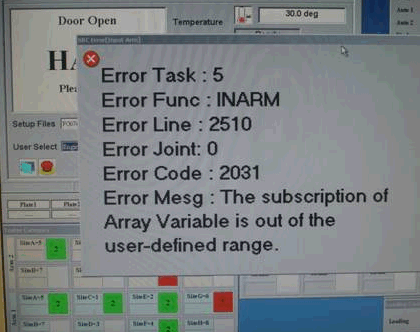
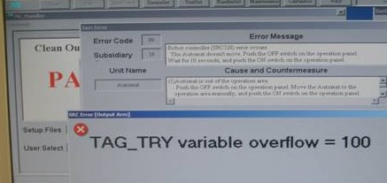

Service History
Subject: NS7KW-08 due to hang-up problem
Handler Model: NS-7080W (S/N: 121401, NS7KW-08)
Controller: RC520 (S/N:01-25413)
Date: 28 Aug 2011
Symptom
Quick Pause DAEMON 03 failed. (Error: 7101) - encountered quick pause daemon error(G-7101) during auto run
2 Sep 2011:
Encountered for Input Arm Error 2031 The subscription of Array Variable is out of the user-defined range.

12 Sep 2011 NS08 encountered several time of SRC error (output arm).

Action
-Execute xilinx.reg to apply patch.
-Restart handler.
-Heat up to 105 deg dry cycle run.
-Dummy run with units (CS324 15x15 hot) with automat slot 1,3 and 10.
SR: 013171
Type: NS-7000
Customer: Xilinx
The detail of question:
What is different TAG_TRY variable over flow =0 and TAG_TRY variable overflow=100
=0
To appear the error
When BIN assign is changed
It is affected the handler is picking up device by hand.
There is no released position.
=100
To appear the error
When BIN assign is changed
It is affected the handler is picking up device by hand.
There is no released position to FIX tray and it is selected "link".
Cause
Remarks